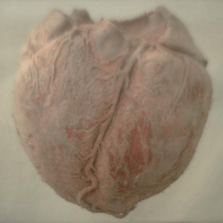
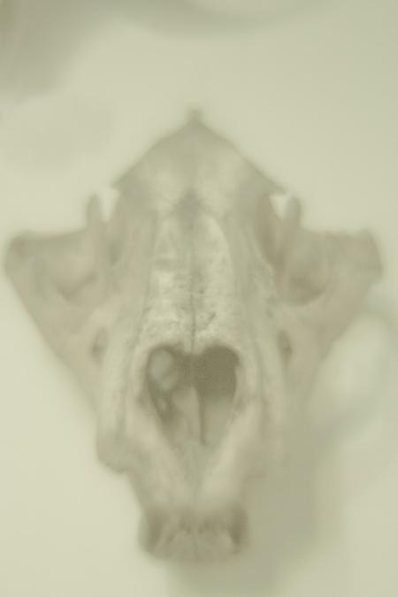
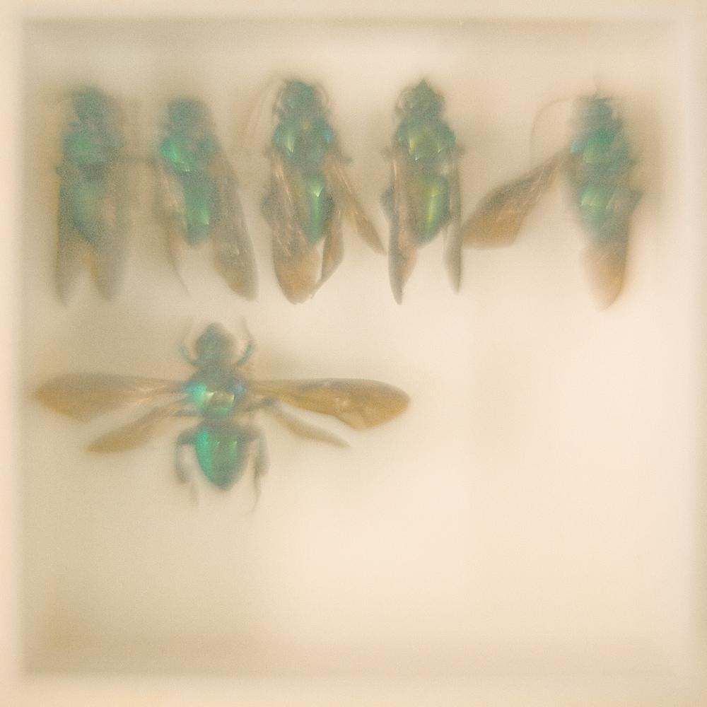
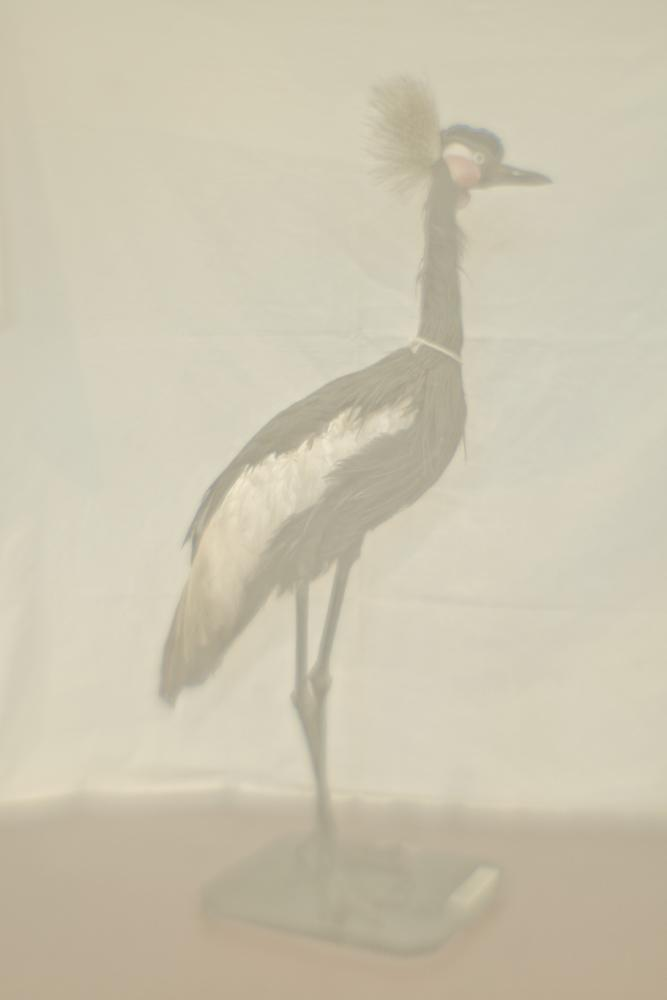

2009–2014
Museu de História Natural
Fotografias




A série Museu de História Natural foi desenvolvida entre 2009 e 2014 e resulta da convergência de duas linhas de pesquisa realizadas pelo artista entre 2006 e 2009. A primeira envolveu a construção de lentes artesanais a partir de elementos ópticos de diferentes origens, incluindo, neste trabalho, uma tampa transparente de frasco de xampu. A segunda concentrou-se na modificação do software de câmeras digitais, buscando alterar os processos de formação da imagem diretamente no dispositivo de captura.
Essas investigações foram realizadas em um período anterior à popularização dos filtros fotográficos automatizados em dispositivos móveis e redes sociais. As intervenções técnicas empregadas não tinham como objetivo a aplicação de efeitos visuais posteriores, mas a experimentação com os próprios mecanismos ópticos e computacionais responsáveis pela produção da imagem fotográfica.
As fotografias não receberam tratamento digital ou retoque posterior. Suas dimensões aproximam-se das dimensões dos objetos retratados. A série é composta por 95 imagens de insetos, esqueletos, animais taxidermizados e recipientes contendo espécimes preservados em solução de formaldeído. As fotografias foram realizadas em pequenos museus do interior do estado de São Paulo e em coleções particulares.
A aparência difusa das imagens resulta da combinação entre a lente artesanal e as modificações realizadas no software da câmera, produzindo fotografias que operam simultaneamente como documentos de acervo e como registros de processos de transformação material. Os espécimes retratados aparecem em uma condição ambígua entre preservação e decomposição, aproximando práticas museológicas, memória material e mortalidade.
Desde 2009, a série foi apresentada em exposições realizadas em São Paulo, Londres, Oslo e Portugal. Parte das obras integra o acervo do Museu da Cidade de São Paulo. A série foi analisada pela pesquisadora Joanna Page no livro Decolonial Ecologies: The Reinvention of Natural History in Latin American Art, que examina práticas artísticas latino-americanas voltadas à revisão crítica dos modos de colecionar, classificar e exibir a natureza nos museus de história natural.